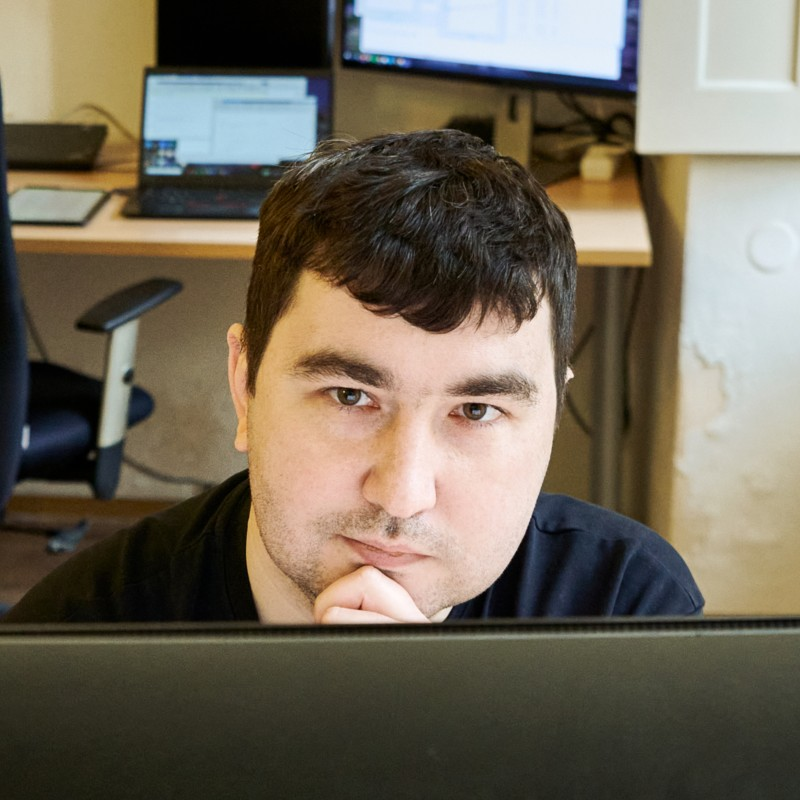
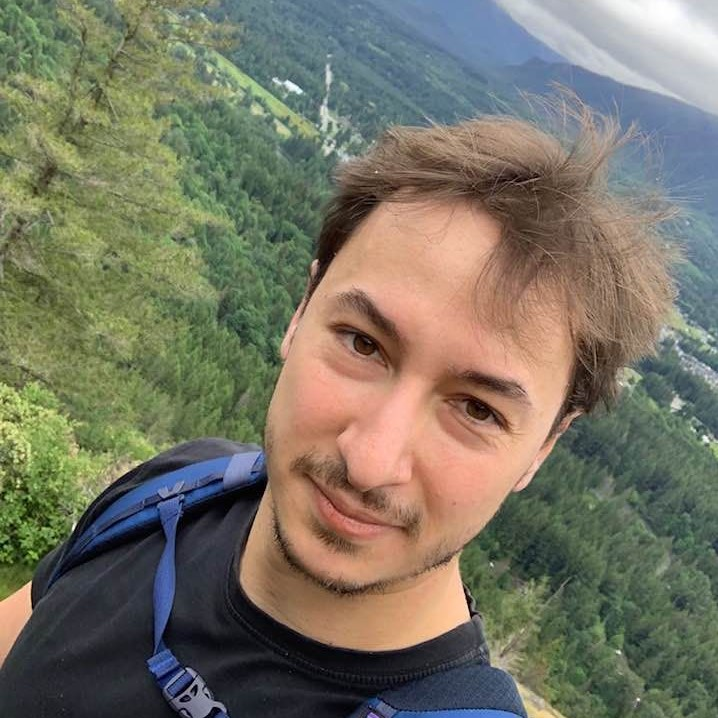
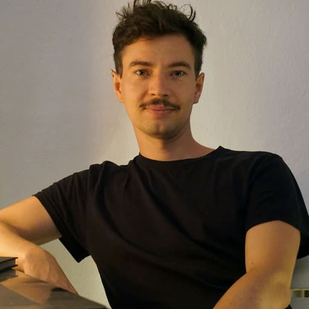
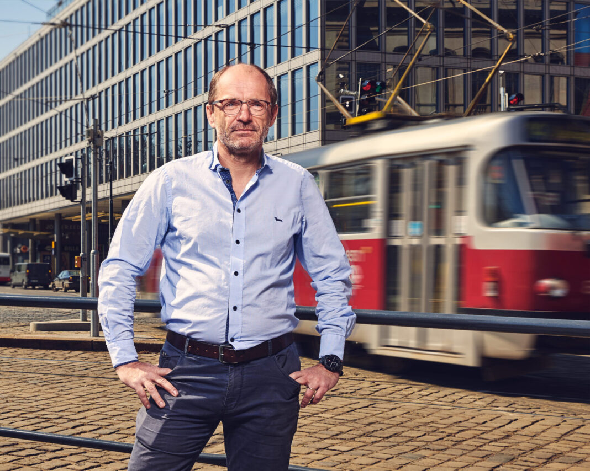
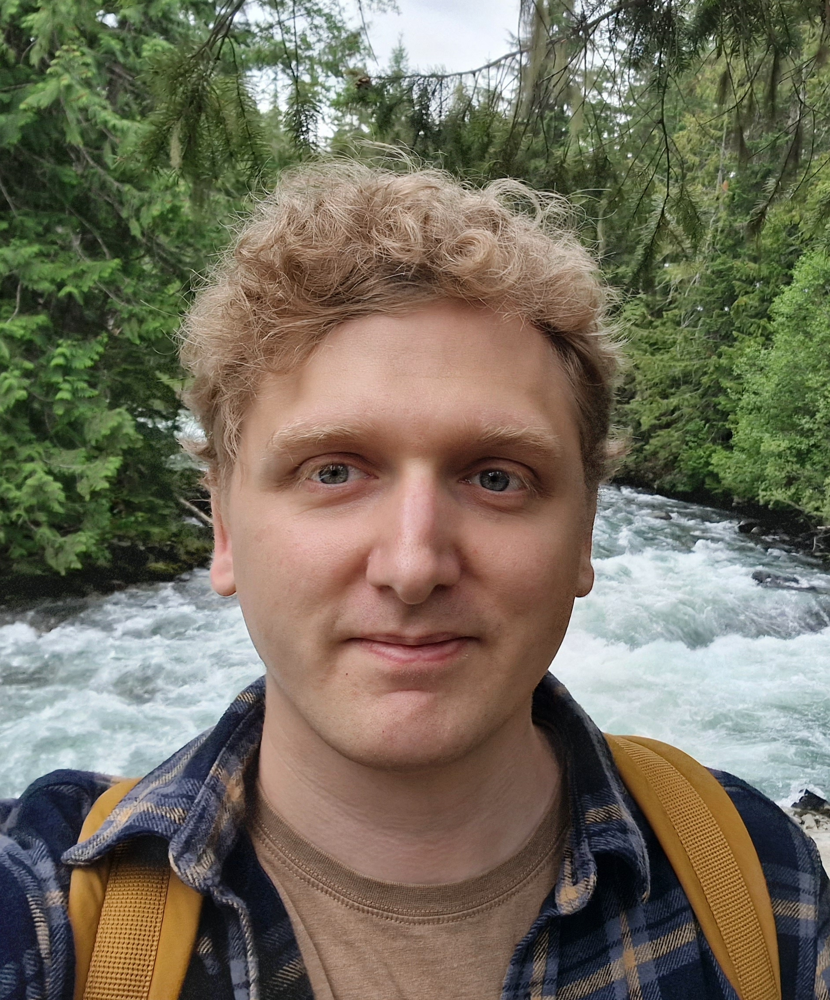

Dmytro Mishkin
Czech Technical University in Prague / HOVER Inc.
Dmytro Mishkin is a Senior Computer Vision Engineer at HOVER Inc. and a postdoc at the Czech Technical University in Prague. He is a co-founder of the Ukrainian Research Group "Szkocka" and the Eastern European Conference on Computer Vision. His research combines classical computer vision algorithms with deep learning for wide baseline stereo.

Daniel Barath
Computer Vision and Geometry Group, ETH Zürich
Daniel Barath was born in 1989 in Budapest. He had his Ph.D. defense in 2019 at the Eotvos Lorand University. Until 2021, he was a member of the Visual Recognition Group, FEE, Czech Technical University, Prague, Czech Republic, and the Machine Perception Research Laboratory at the Institute for Computer Science and Control (HUN-REN SZTAKI), Budapest, Hungary. Currently, he is a senior researcher of the Computer Vision and Geometry Group at ETH Zürich and a visiting researcher at Google in the Semantic Perception Group. His research interests are robust model estimation, minimal methods, scene reconstruction and understanding in computer vision. He has co-organized tutorials on various topics at CVPR 2020, 2022, ICPR 2020, ICCV 2023, and 3DV 2024.

Eric Brachmann
Niantic Spatial
Eric Brachmann is a staff scientist at Niantic Spatial, working on Niantic's Visual Positioning System. He received a doctorate in 2018 by the TU Dresden (Germany), and he was a post-doctoral researcher at the Visual Learning Lab of Prof. Rother at the University Heidelberg, until 2020. He works on 3D vision topics such as object pose estimation, camera re-localization, discrete feature matching, robust estimation and structure-from-motion. He is an expert in scene coordinate regression, which is a core element in state-of-the-art learning-based localization techniques. He publishes his work at the leading computer vision conferences, is an active reviewer and area chair. He co-organized multiple tutorials, workshops and challenges on visual localization, 6D pose estimation of objects, and map-free visual relocalisation.

Jiri Matas
Czech Technical University in Prague
Jiri Matas is the head of the Visual Recognition Group at the Center for Machine Perception, Department of Cybernetics, Czech Technical University in Prague. He has published more than 300 papers that have been cited about 74000 times in Google Scholar (h-index = 98). J. Matas served as a programme or general chair at ECCV 2004, 2016, 2022 and CVPR 2007 and 2022. He is an Editor-in-Chief of the International Journal of Computer Vision. He is on the computer science panel of the ERC. He has co-organised tutorials, e.g., at CVPR 2005 and 2020.

Viktor Larsson
Lund University
Viktor Larsson is currently an assistant professor at Lund University. He previously worked as a senior researcher at the Computer Vision and Geometry group at ETH Zurich. His research is mainly focused on robust estimation and optimisation problems that appear in 3D computer vision (e.g. Structure-from-Motion, visual localization, SLAM and dense geometry estimation). His research has received paper awards at ICPR’16, ACCV’18, ICCV’21 and 3DV’24. He has previously co-organised tutorials at CVPR 2019, ECCV 2022, ICCV 2023 and 3DV 2024 on related topics.